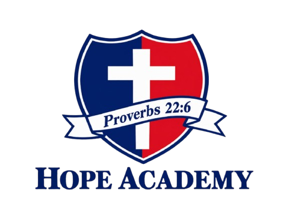

03
OUR TEAM
The students behind Beyond the Stars.

The Story Behind Beyond the Stars
Beyond the Stars was created to make learning about space more interesting, visual, and accessible. Our purpose is to introduce visitors to the universe and help them discover the incredible objects, places, and phenomena that exist beyond Earth. Space is much more than planets and stars. It includes galaxies, nebulae, black holes, spacecraft, astronauts, space missions, and many other fascinating parts of the cosmos. Through this website, we wanted to bring these topics together in one place and present them in a way that is easy to explore and understand. We also wanted to show how much humanity has learned through observation,scientific research, and space exploration. Every mission, discovery, and new image from space gives us a better understanding of the universe and our place within it. Beyond the Stars is designed to encourage visitors to explore, learn, and become curious about the questions that scientists continue to study today. There is still so much we do not know about the universe, and that is what makes space one of the most fascinating subjects to explore.
Our vision is to inspire curiosity and encourage people to look beyond what they already know. We believe that learning about the universe helps us understand how extraordinary the world beyond Earth really is.
We want Beyond the Stars to feel like a journey through the cosmos, from our Solar System to distant galaxies, mysterious black holes, and the future of human space exploration.
As technology continues to develop, future generations may explore places that are currently beyond our reach. We hope to encourage that same curiosity and remind visitors that there will always be something new to discover.
The students behind Beyond the Stars.
This project was created as part of our Website Design work at Hope Academy. Through this project, we combined creativity, research, design, HTML, and CSS to create an interactive experience focused on space and exploration.

LOOK BEYOND WHAT YOU KNOW